Cabo Verdean Rhythms
This website serves as a companion to the book Cabo Verdean Rhythms. It hosts supplementary audiovisual materials—primarily video recordings and photographs—documenting Kolá San Jon performances in Cabo Verde. These materials are intended to support and extend the book’s analysis by providing visual and sonic references for key moments discussed in the chapters. Users are invited to explore the site alongside the book, using the materials to contextualize the performances, spaces, and social dynamics under examination.
About the Book
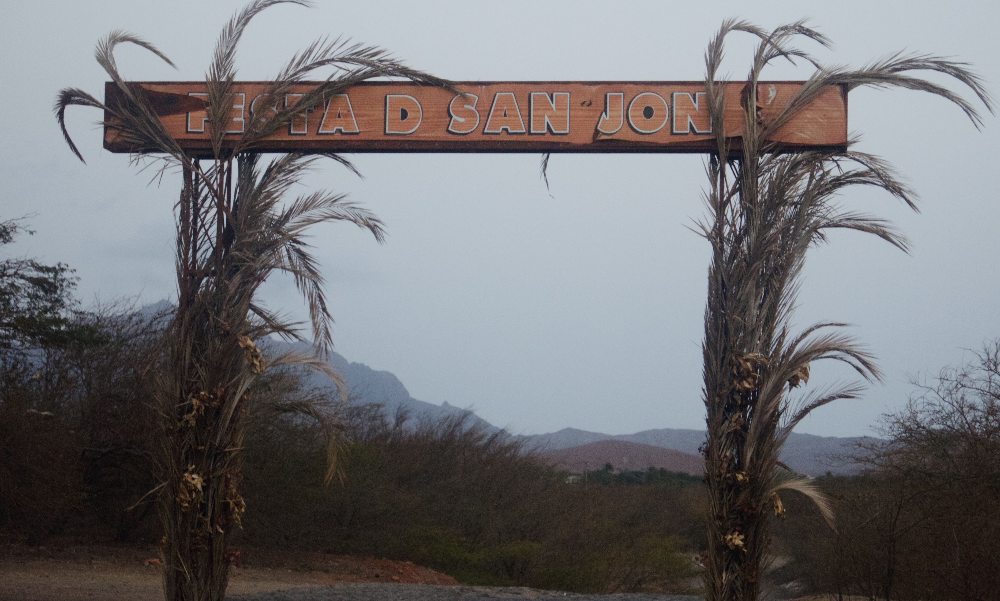Entrance to the festive area at Ribeira de Julião on São Vicente
Cabo Verdean Rhythms examines the musical and performative dimensions of Kolá San Jon, a central component of the Festas Juninas in Cabo Verde. Through an ethnographic and analytical study of Kolá San Jon, the book explores how rhythms, movement, and performance function as modes of negotiating social and cultural boundaries in the archipelago.
Focusing on the inter-island relationships between São Vicente and Santo Antão, the book situates Kolá San Jon within broader historical processes of creolization and spatialization, particularly in relation to Cabo Verde’s colonial and postcolonial contexts. It investigates how drumming, dance, and processionals serve as mechanisms for producing belonging, organizing space, and articulating identity. The book also addresses the notion of ritual failure as a means of understanding the tensions and instabilities inherent in these practices.
Bringing together perspectives from ethnomusicology, postcolonial studies, and spatial theory, Cabo Verdean Rhythms contributes to ongoing discussions on sound, space, and identity.
Order the book here: https://www.routledge.com/Cabo-Verdean-Rhythms-Kola-San-Jon-Spatialization-and-the-Performance-of-Creolidade/Ringsmut/p/book/9781032895062
About the Author
Kolá San Performance 2017 on São Vicente (author in the middle) Photo by Helder Dias.
Chapter 1
This is an introductory video to the Kolá San Jon tradition on São Vicente (Cabo Verde). It shows the diverse performances during the festas juninas on São Vicente, including drumming, dancing, processions, as well as artifacts such as ships, flags, and naval costumes. The clips were filmed in 2016 and 2017.
Chapter 3
Chapter 4
This video presents a Kolá San Jon rhythm (toka) that is played for San Pedro (Saint Peter) and was filmed in 2017 on São Vicente, Cabo Verde. It corresponds to figure 4.15 (p. 100) in the book.
This video presents a Kolá San Jon rhythm (toka) that belongs to and signifies Ribeira Grande on Santo Antão and was filmed in 2017 on São Vicente, Cabo Verde. The video corresponds to figure 4.16 (p. 101) in the book.
This video presents a Kolá San Jon toka often used by the Miranda family and was filmed in 2017 on the eve of the fest of San Jon in Mindelo, São Vicente, Cabo Verde. The video corresponds to figure 4.21 (p. 104) in the book.
This video presents different Kolá San Jon rhythms (tokas) that are played for San Anton (Saint Anthony) and was filmed in 2017 on São Vicente, Cabo Verde. The video corresponds to figures 4.5 (p.96), 4.6 (p.97) and 4.7 (p.97) in the book.
This video presents different Kolá San Jon rhythms (tokas) that are played for San Jon (Saint John the Baptist) and was filmed in 2017 on São Vicente, Cabo Verde. It corresponds to figures 4.9 (p.98), 4.10 (p.98), 4.11 (p.99), 4.12 (p.99), 4.13 (p.100) and 4.14 (p.100) in the book.
Chapter 5
This video shows the performance of the capitão and espada of the Kolá San Jon group San Jon Revoltiod in 2017. It corresponds to figure 5.2 (p.114) in the book.
This video features educators and students at Mindelense school in 2017, performing Kolá San Jon with a focus on dance. The video corresponds to figure 5.1 (p.112) and 5.4 (p.116) in the book.
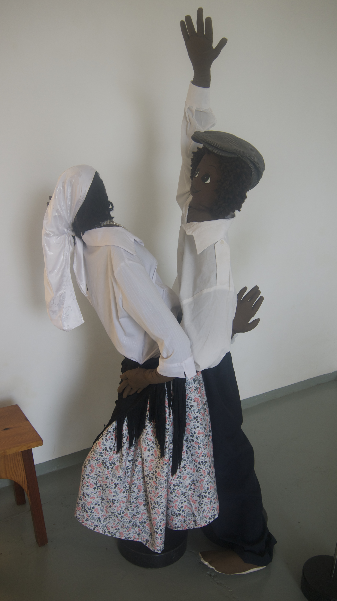 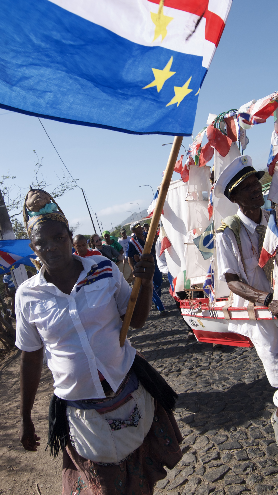 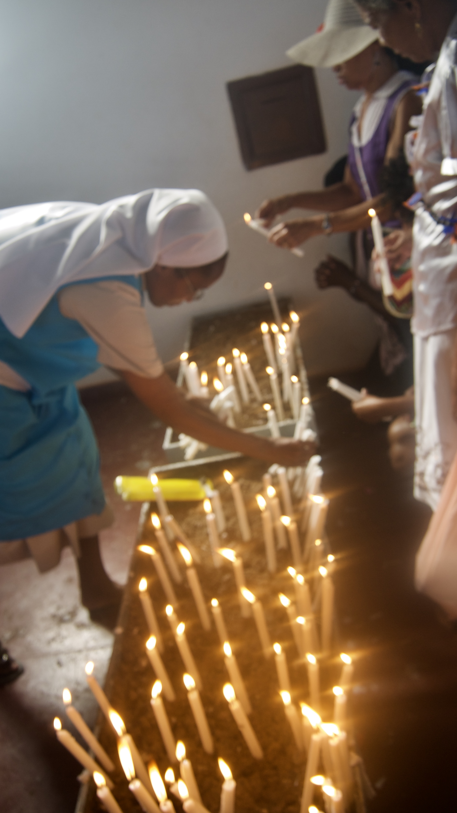 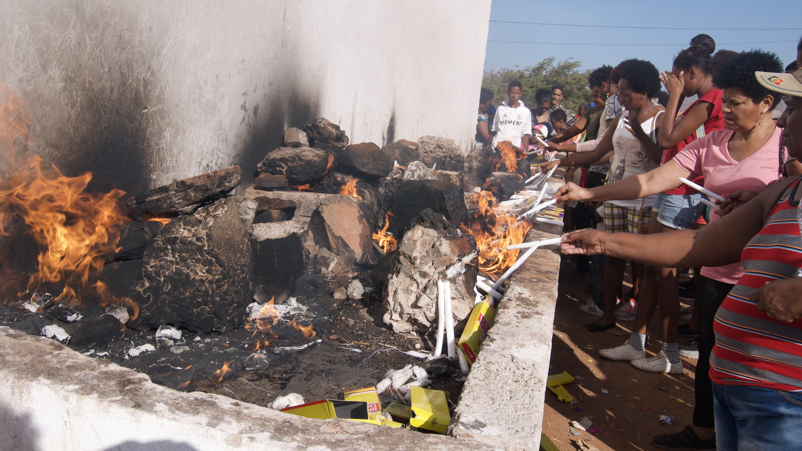 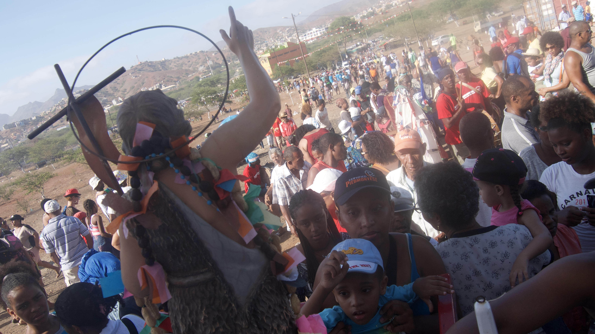 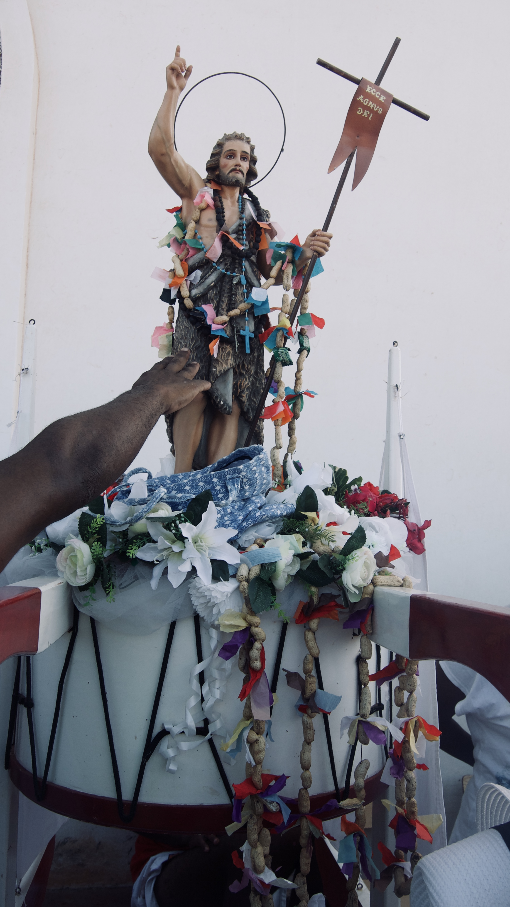Chapter 6
The video shows the Kolá San Jon performances taking place along the processional routes in Mindelo on the 23rd and 24th of June. It corresponds to figure 6.1 (p.135) in the book.
The video shows the different Kolá San Jon performances taking place at Ribeira de Julião, São Vicente on the 24th of June. It corresponds to figure 6.7 (p.157) in the book.
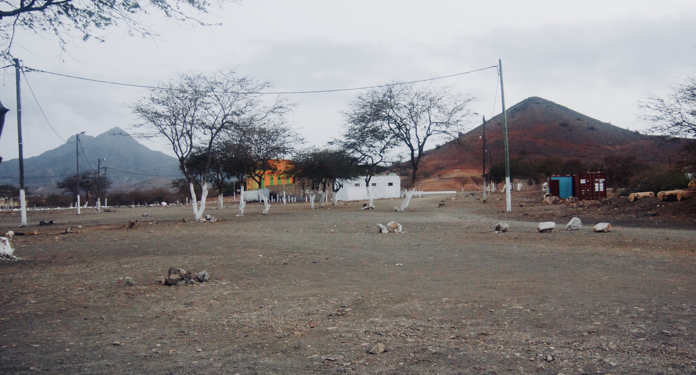The festive space at Ribeira de Julião before and during the festas.
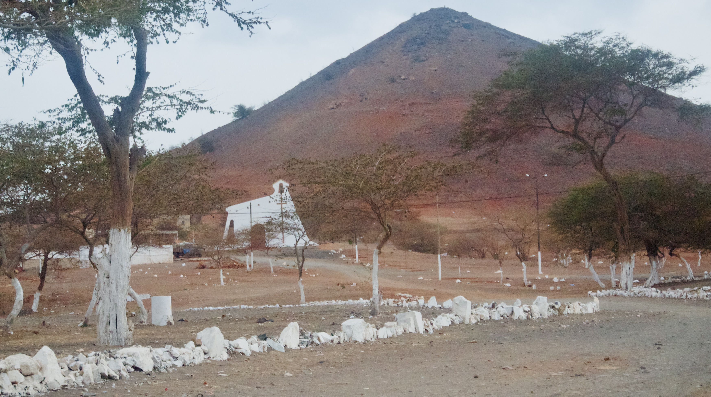The festive space at Ribeira de Julião before and during the festas.
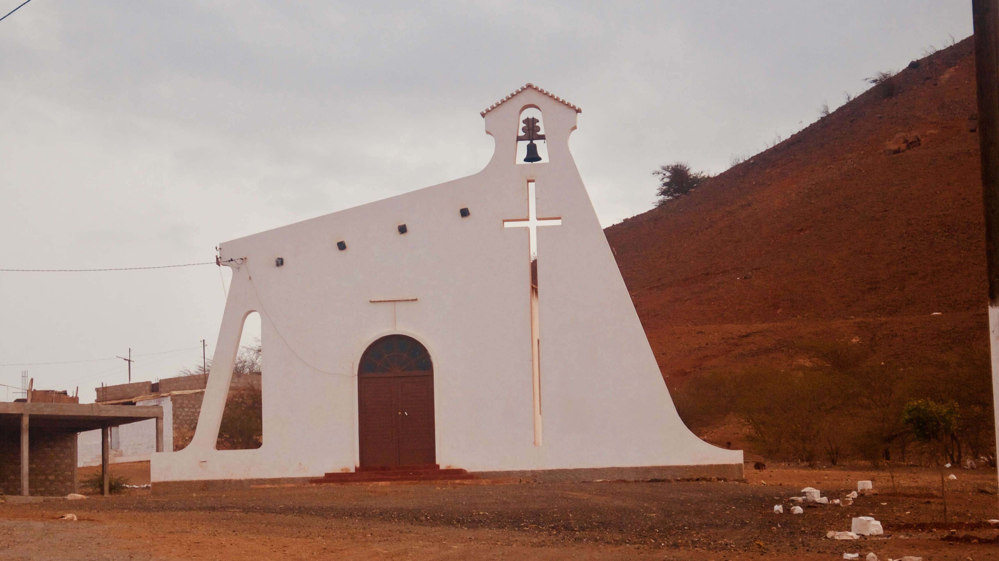The festive space at Ribeira de Julião before and during the festas.
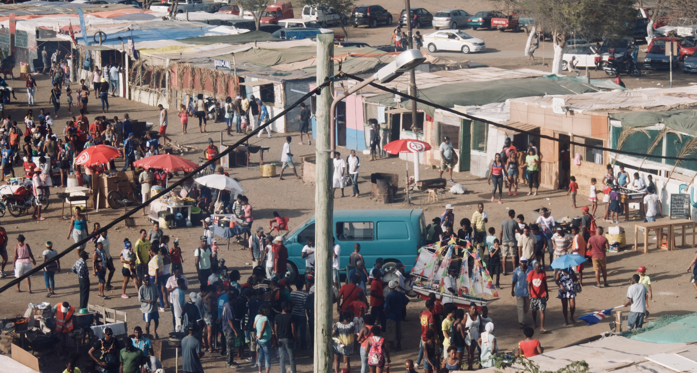The festive space at Ribeira de Julião before and during the festas.
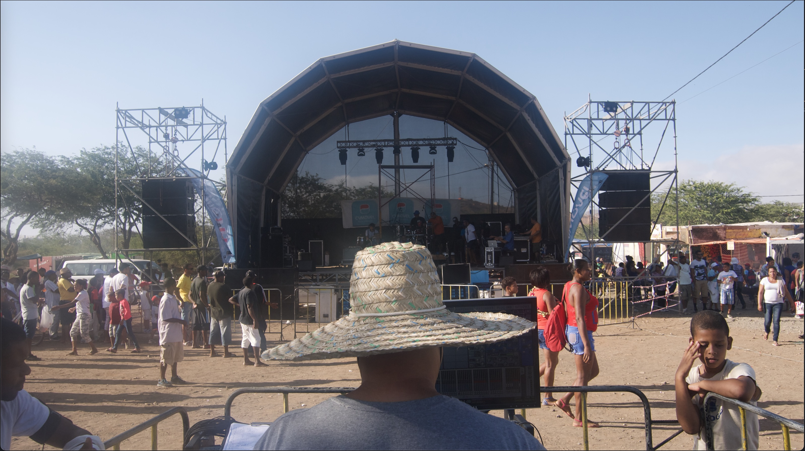The festive space at Ribeira de Julião before and during the festas.